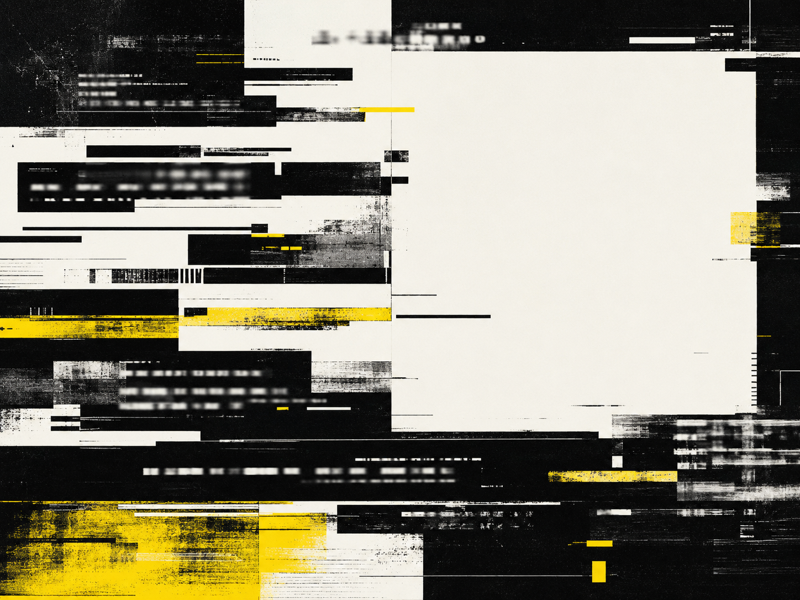

TEXT INDEX · A01—A12
INDEX
按固定编号顺序浏览全部十二项视觉实验。每一行均进入对应详情页。
全部实验索引
- A01NONHUMAN ALPHABET非人字母表TYPE

- A02BROKEN CAPTION破损字幕TYPE

- A03UNREADABLE WEATHER不可读天气TYPE

- A04SYNTHETIC FOSSILS合成化石IMAGE

- A05SOFT HARDWARE柔软硬件IMAGE

- A06ARCHIVE OF ACCIDENTS偶发档案IMAGE

- A07FALSE TAXONOMY虚构分类学SYSTEM

- A08SIGNAL SPECIMENS信号标本SYSTEM

- A09INTERFACE RELICS界面遗物SYSTEM

- A10TEMPORARY MONUMENT临时纪念碑FIELD NOTES

- A11COLOR CONFLICT 01色彩冲突 01FIELD NOTES

- A12UNKNOWN RITUALS未知仪式FIELD NOTES